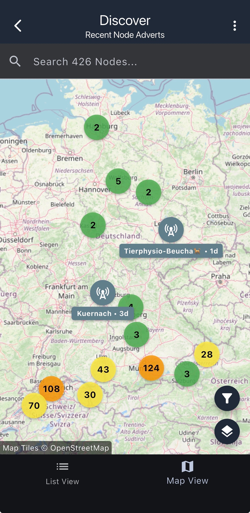

Posts
• Nomad Network
Posted on:
Off-grid, resilient mesh communication with strong encryption, forward secrecy and extreme privacy.
Nomad Network allows you to build private and resilient communications platforms that are in complete control and ownership
of the people that use them. No signups, no agreements, no handover of any data, no permissions and gatekeepers.
Nomad Network is build on LXMF and Reticulum, which together provides the cryptographic mesh functionality and peer-to-peer
message routing that Nomad Network relies on. This foundation also makes it possible to use the program over
a very wide variety of communication mediums, from packet radio to fiber optics.
Nomad Network does not need any connections to the public internet to work. In fact, it doesn't even need an IP or Ethernet network.
You can use it entirely over packet radio, LoRa or even serial lines. But if you wish, you can bridge islanded networks over the Internet or
private ethernet networks, or you can build networks running completely over the Internet. The choice is yours. Since Nomad Network uses Reticulum,
it is efficient enough to run even over extremely low-bandwidth medium, and has been succesfully used over 300bps radio links.

• Meshcore
Posted on:
MeshCore is a multi platform system for enabling secure text based communications utilising LoRa radio hardware.
It can be used for Off-Grid Communication, Emergency Response &
Disaster Recovery, Outdoor Activities, Tactical Security including law enforcement and private security and also IoT sensor networks.
Official Meshcore Website
I have a Repeater setup in Meisterschwanden in the Attic, currently not the best position but working on a solar node for the roof.
Feel free to reach out to me and add my contact:

• GPG Cheat Sheet
Posted on:
gpg_cheat_sheet_11_2025.txt
gpg_cheat_sheet_11_2025.txt.sig
Posted on:
Frequency/Wavelength conversion
Posted on:
Some bouncing balls in a box.
• Website launch
Posted on:
First launch of this website.
PGP Keys
Public Key (Active)
-----BEGIN PGP PUBLIC KEY BLOCK-----
mDMEaN2HMxYJKwYBBAHaRw8BAQdAREfg68hVcmi+gRlJJXOxfiN9LCyY2sfHwAQR
avpfxra0UU1pa2UgRHlsYW4gUG9wcGVsYWFycyAoQmF0dGVyIG15IGhlYXJ0LCB0
aHJlZS1wZXJzb24nZCBHb2QuKSA8bWFpbEBtaWtlZHlsYW4uY29tPoiZBBMWCgBB
FiEEReFiiwakrp7RXd3uP87Cd49aMCoFAmjdhzMCGwMFCQlmAYAFCwkIBwICIgIG
FQoJCAsCBBYCAwECHgcCF4AACgkQP87Cd49aMCpClQEAxwwEKPqja1fiNACwMJxK
8H9gCcV9tbeGzpNlRmto24sBAOd1Ov2j4gYR+7rdIn8ANnWGDYQyccCZlB9tyfeD
ChYAuDgEaN2HMxIKKwYBBAGXVQEFAQEHQGIRi6VZ/UJi1PBB+HLo1/Zt83ajXJqA
3cDWvuF0Bvh+AwEIB4h+BBgWCgAmFiEEReFiiwakrp7RXd3uP87Cd49aMCoFAmjd
hzMCGwwFCQlmAYAACgkQP87Cd49aMCoHqAEAt1UIqZR0ZQIpnU0WtiMAqExEOIOi
GEtqGlHfTtAUlv4A/jxUe5PgPaSXLuQmJUP87CQykqDMkd4H3XSt05ZEibcL
=s6wI
-----END PGP PUBLIC KEY BLOCK-----
Fingerprint: 45E1 628B 06A4 AE9E D15D DDEE 3FCE C277 8F5A 302A
Keyservers
- keys.openpgp.org
- keyserver.ubuntu.com
pub
(4)eddsa263/45e1628b06a4ae9ed15dddee3fcec2778f5a302a
2025-10-01T19:55:31Z
uid
Mike Dylan Poppelaars (Batter my heart, three-person'd God.) <mail@mikedylan.com>
sig cert
3fcec2778f5a302a
2025-10-01T19:55:31Z 2030-09-30T19:55:31Z ____________________
[selfsig]
sub
(4)ecdh263/c378a0e125ce94c929d937d9a04e2f16abbb4ef3 2025-10-01T19:55:31Z
sig sbind
3fcec2778f5a302a
2025-10-01T19:55:31Z ____________________ 2030-09-30T19:55:31Z
If you want to help people circumvent online censorship, consider turning on the snowflake proxy. For more info, visit the official Tor website.